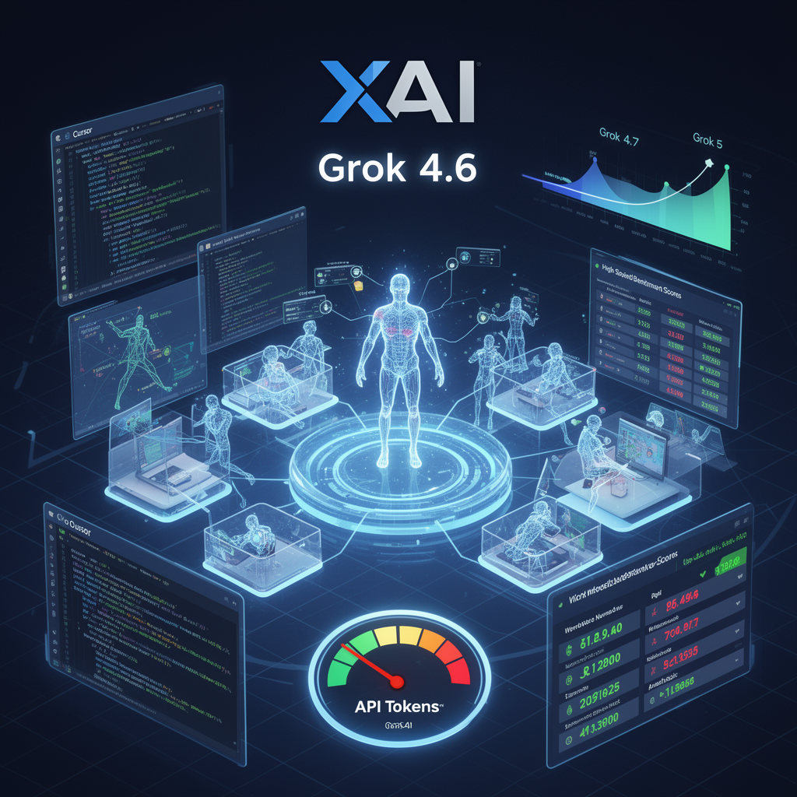

AI Panorama · fly through the Gemini 3.7 Flash edition
This page was written entirely by Gemini 3.7 Flash (Google), as one of the magazine's editions - eight AI models each wrote their own version of every story from the same frozen sources.
The same story in other editions: GPT-5.6 Terra Claude Sonnet 5 Grok 4.6 DeepSeek V4 Pro GLM 5.3 Qwen 3.8 Max Kimi K2.6
xAI has launched Grok 4.6, matching top frontier models on technical tasks while cutting API prices below major competitors.

On August 13, 2026, xAI released Grok 4.6, an upgraded version of its flagship artificial intelligence model. The update demonstrates a rapid pace of engineering iteration following the company's acquisition of the coding assistant platform Cursor earlier in the year. Industry testing shows the new release closing the performance gap with market leaders OpenAI and Anthropic, particularly in programming, 3D asset generation, and complex office work.
## Training on Developer Workflows
Grok 4.6 builds directly upon the architecture of its predecessor, Grok 4.5. Both are based on a 1.5 trillion parameter foundation model. Rather than starting from scratch with a fresh base run, xAI extended the model's supplemental training phase using massive datasets acquired from Cursor, alongside curated synthetic data generated by Grok 4.5 itself.
This training technique, often called recursive self-improvement, uses an existing model to generate and refine complex reasoning problems and engineering trajectories. Those curated examples are then used during supervised fine-tuning and reinforcement learning to teach the next version how to navigate difficult tasks. The focus on programming data appears deliberate: programming tasks provide unambiguous feedback loops, making them ideal ground for honing a model's underlying reasoning abilities.
## Benchmark Performance and Cost
Independent evaluations place Grok 4.6 near the top tier of active foundation models, though rankings shift across specific domains. On GPT-Val, a benchmark designed to evaluate how well software handles real-world workplace tasks across various industries, Grok 4.6 scored higher than OpenAI's GPT 5.6 Soul and Anthropic's Fable 5 Max. It also showed strong results on legal testing benchmarks like Harvey Lab.
On developer-focused programming tests, results were slightly more mixed. On DeepSWE 1.1, a benchmark measuring automated software engineering tasks, Grok 4.6 scored 65.9%, trailing Anthropic's Fable 5 at 70% and GPT 5.6 Soul Max at 73%.
Where xAI is pushing an aggressive advantage is pricing. Standard API access for Grok 4.6 is set at $2 per million input tokens and $6 per million output tokens. That makes it half the output cost of GPT 5.6 and 40% cheaper than Anthropic's Sonnet 5. On composite indices such as the Artificial Analysis Intelligence Index, Grok 4.6 delivers high-tier reasoning near GPT 5.6 Soul, but at an average task cost of around 83 cents, noticeably lower than Opus 5 or top-end OpenAI variants.
## From Single Chatbots to Autonomous Digital Labor
Alongside the model release, testing across developer environments showed Grok 4.6 constructing complex interactive software from single prompts. In live demonstrations, testers used Grok Build and Cursor to generate functioning 3D browser games, interactive web mockups rendered in Three.js, and simulated 3D-printable mechanical assemblies within minutes.
To move beyond software developers and into general offices, xAI paired the release with Grok Bot. Unlike standard chatbots that answer questions one at a time in a browser window, Grok Bot acts as an always-on operating environment. Each agent runs inside an independent virtual machine in the cloud, allowing it to browse the web, write code, run terminal scripts, and schedule ongoing routines 24 hours a day without keeping the user's personal computer open.
The system uses a hierarchical structure where a primary coordinator, configured like a chief of staff, delegates sub-tasks to specialized background workers. Users can also demonstrate manual workflows using a teach-a-task feature, recording browser actions to train automated routines for future delegation.
## An Accelerating Release Schedule
The launch of Grok 4.6 signals a shift toward shorter, high-frequency update cycles. Company plans indicate a follow-up model, Grok 4.7, expected within three to four weeks, incorporating supplemental data from SpaceX, with Grok 5 targeted before the end of 2026. This rapid pipeline suggests the frontier AI market is consolidating around three primary competitors competing intensely on compute speed, developer data, and price per task.
Supplemental TrainingCost per Task
xaigrokbenchmarkscursoragents